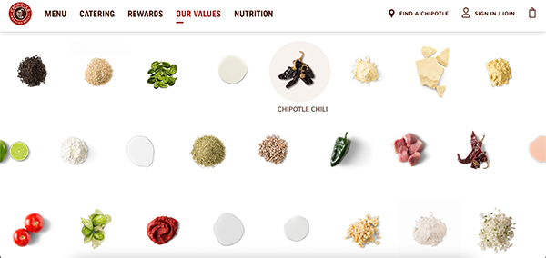
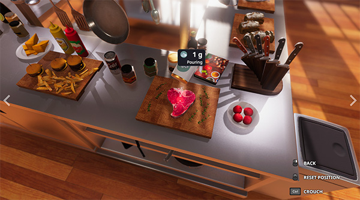

These projects explore interactive experiences and food systems that relate to my capstone idea of a future greenhouse restaurant focused on sustainability, interaction, and storytelling.
Chipotle Values (Sustainability + Education)
Visit Website

Chipotle's Values page focuses on communicating sustainability and ethical food sourcing through a clean, scroll-based interface. The design is very minimal, with strong visuals and short sections that explain ideas like responsibly sourced ingredients and environmental impact. What works well is how the information feels approachable and easy to understand without being overwhelming. This connects to my project because I also want users to learn about where ingredients come from and how food systems work. However, the experience is mostly passive since users are just scrolling and reading. For my project, I want to build on this by making the learning more interactive, where users can choose ingredients and see how their decisions affect sustainability outcomes in real time.
Cooking Simulator (Interactive Cooking Experience)
View on Steam

Cooking Simulator is a highly interactive game where users prepare meals by selecting ingredients, using tools, and choosing different cooking methods. The experience is very hands-on, and the outcome of each dish depends on the user's actions, which creates a strong sense of control and immersion. This is really relevant to my project because I want users to actively participate in creating a meal instead of just viewing content. One thing that stands out is how intuitive the interactions are, like dragging, combining, and cooking, which makes the experience feel engaging. However, the game focuses more on realism and mechanics rather than storytelling or atmosphere. For my project, I want to combine this level of interaction with a more emotional and environmental narrative, so it feels immersive and meaningful, not just functional.